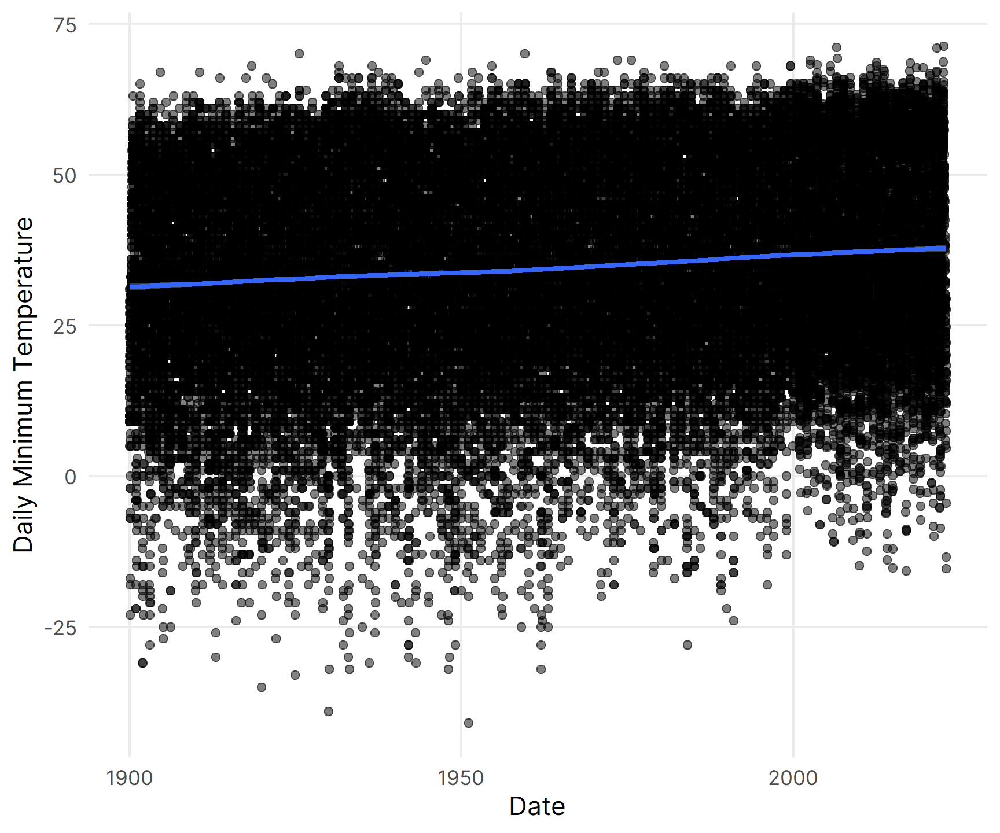
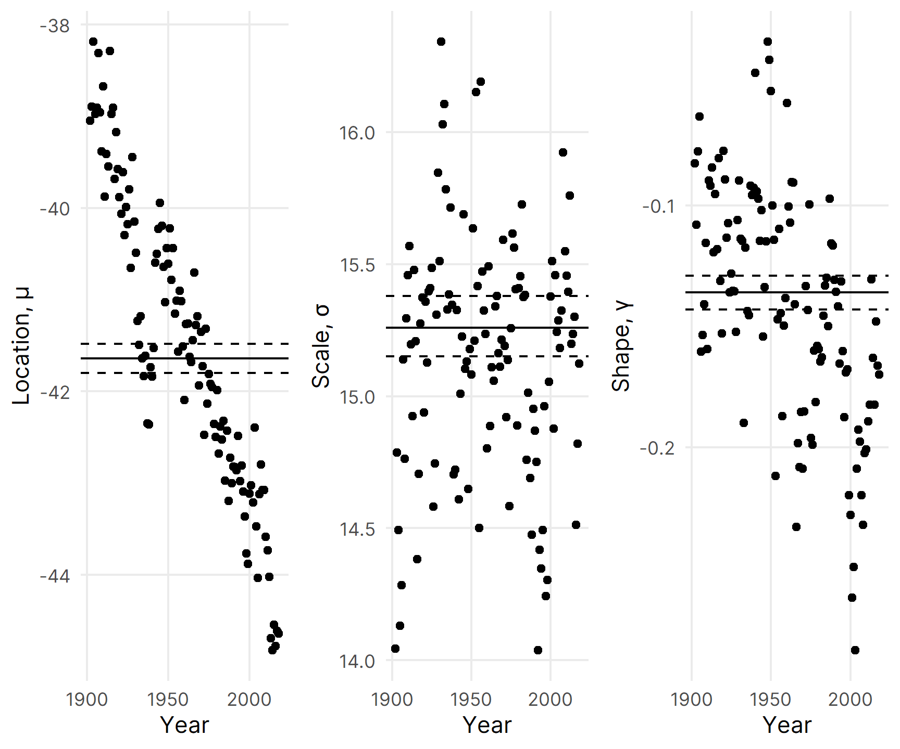
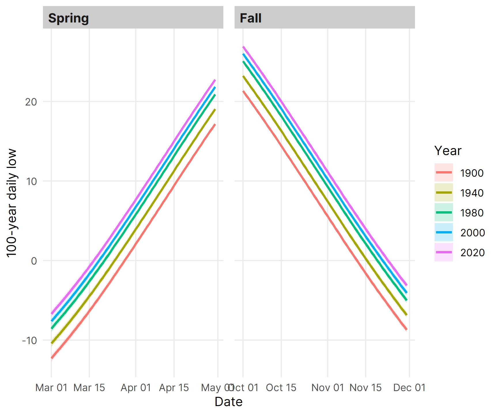

library(tidyverse)
library(ggplot2)
library(ggtext)
library(extRemes)
library(gridExtra)
library(lubridate)
library(kableExtra)
library(knitr)
library(httr)
library(jsonlite)
library(modelsummary)
# Load FCwx data from extRemes package
data(FCwx)
# Query updated FCwx observations and combine
api <- GET("http://www.coagmet.colostate.edu/data/daily/fcl01.json?from=2000-01-01&to=2022-12-31&fields=tMax,tMin,precip")
FCwx2k <- do.call(cbind.data.frame,fromJSON(rawToChar(api$content))) |>
mutate(dt = as.Date(time,"%Y-%m-%d"), Dy = yday(dt), Mn = month(dt), Year = year(dt)) |>
select(dt,Dy,Mn,Year,tMin) |> rename(MnT = tMin)
FCwx <- FCwx |> mutate(dt = as.Date(paste(Dy,"-",Mn,"-",Year),"%d - %m - %Y")) |>
select(dt,Dy,Mn,Year,MnT)
FCwx <- bind_rows(FCwx,FCwx2k) |> mutate(doy = yday(dt))
FCwx <- FCwx[FCwx$MnT != -999,]
windowsFonts(Inter = windowsFont("Inter"))
theme_nice <- function() {
theme_minimal(base_family = "Inter") +
theme(panel.grid.minor = element_blank(),
panel.spacing.x = unit(10, "points"),
plot.title = element_text(family= "Inter", face = "bold"),
axis.title = element_text(family = "Inter"),
strip.text = element_text(family = "Inter", face = "bold",
size = rel(1), hjust = 0),
strip.background = element_rect(fill = "grey80", color = NA))
}
update_geom_defaults("label", list(family="Inter"))
update_geom_defaults(ggtext::GeomRichText, list(family="Inter"))Historical low temperatures in Fort Collins, CO
r
tidyverse
ggplot
extreme values
Use the {extRemes} R package to fit extreme value distributions to daily low temperatures
Daniel Burcham ![]()
The dead of winter
Recently, the Colorado State University (CSU) weather station recorded a daily low temperature of -15.4° F in the early morning of 22 December 2022. At the time, wind chills varying between -50° and -35° F threatened lives across most of the Eastern plains in Colorado. The frigid temperatures accompanied a string of unpleasant winter weather for much of the US with many places experiencing bitter cold, gusty winds, and heavy snow; and the unfortunate timing of the weather only compounded the frustrations of many people traveling over the holidays.
Cold weather snaps are common in Colorado, and the plants and people living here must equally tolerate occasional severe freezing. Fortunately, many trees easily endure freezing temperatures during the winter months - the vegetative buds on most deciduous broadleaf trees withstand temperatures between -13° and -37° F (-25° and -35° C). Occasionally, though, some cultivated trees are injured or killed by low temperatures, especially if temperatures drop abruptly after relatively warm weather (e.g., false springs) or the species was introduced from a milder climate. The sudden freezes can be especially harmful if trees are not acclimated to freezing temperatures; the events can damage buds, leaves, and flowers and, in some cases, disrupt water conduction or natural growth patterns. In recent years, for example, several freeze events killed large numbers of Siberian elms (Ulmus pumila) along the Front Range, and I have heard similar stories about widespread tree damage caused by unusual fall freezes in earlier decades.
Freezing tolerance in trees
Trees use a number of strategies to tolerate freezing temperatures during winter, including withdrawing water into non-living tissues where ice formation avoids damage to living cells, lowering the freezing point of the water retained in cells, and forming physical barriers restricting the propagation of ice crystals. As temperatures fall below freezing, extracellular ice draws out some of the water retained in living cells along an osmotic gradient between the two phases of water, and trees further modify their living cells to tolerate the desiccation during freezing. In addition to leaf shedding, the modifications are all part of a tree’s yearly preparations for the winter season.
The seasonal pattern of cold hardiness is U-shaped with trees increasingly hardy to progressively lower freezing temperatures during the fall, consistently hardy to a minimum temperature during the winter, and decreasingly hardy during the spring. Crucially, the timing of seasonal transitions ensures that a tree’s physiological activity matches changing environmental conditions. There is broad agreement that day length and temperature mainly govern the acquisition and loss of cold hardiness, respectively, in the fall and spring each year, but individual tree species also display a unique sensitivity to the two seasonal environmental cues for spring emergence. Some species, like green ash (Fraxinus pennsylvanica) and Siberian elm, are more sensitive to temperature during bud burst in the spring, and others, like white ash (Fraxinus americana) and littleleaf linden (Tilia cordata), are more sensitive to day length during the same transition. The heavy reliance on fickle temperatures for seasonal transitions may explain the winter damage more commonly observed on the former two species, but the seasonal cues for many species are also moderated by a chilling (accumulated low temperature) requirement that, if unfulfilled, prevents premature bud burst.
For a given species, the precise timing of spring budburst is determined by the maximum cold hardiness, accumulated low winter temperatures (i.e., chilling), warm spring temperatures (i.e., forcing), and increasing spring day length (i.e., photoperiod). In many places, scientists have observed a steady advancement of biological spring towards earlier times of the year amid the warming climate, and the risk of freeze damage during false springs may be especially significant for trees, depending on the rate of cold hardiness loss during spring. In Colorado, wild temperature fluctuations are already commonplace in the spring and fall, and many people have learned to simply avoid planting trees tending to leaf out early or retain leaves late in the season. Moving forward, it will still be important to consider tree phenology when evaluating the possibility of planting new species in our landscapes.
Statistics of extremes
Recently, I received a summary of extreme low temperatures in Fort Collins during the 20th Century, and the report clearly showed that our predecessors on the Front Range endured much colder days. Curious about recent trends, I decided to update the summary with more recent observations and explore the use of extreme value analysis to characterize severe freezing events in Fort Collins using the extRemes package in R. Instead of evaluating more commonplace conditions, extreme value distributions depict the occurrence of maximum (or minimum) values in a data set. Usefully, they can characterize extreme climate processes without a mechanistic treatment of the underlying physical phenomena. They have been used to statistically describe the probability of very rare or extreme events, such as severe “100-year” floods, and they have yielded important design criteria for engineers anticipating the limits of environmental conditions affecting buildings or infrastructure. The cumulative density function (CDF) for the Generalized Extreme Value (GEV) distribution can be defined as: \[F(x;\mu,\sigma,\gamma)=e^{-[1-\gamma(x-\mu)/\sigma]^{1/\gamma}} \tag{1}\] where \(\gamma\ne0\) and \([1-\gamma(x-\mu)/\sigma]>0\). The three parameters \(\mu\), \(\sigma\), and \(\gamma\) depict the location, scale, and shape of the distribution. The location parameter, \(\mu\), represents the most common, i.e., modal, extreme value. The scale parameter, \(\sigma\), portrays the rate of change in \(x\) with the natural logarithm of time, and the ration \(\sigma/\gamma\) represents the maximum extreme value. The return level, \(x\), associated with a return period, \(T\), corresponds to the \(1-p\) quantile of the distribution, where \(p=1/T\). For example, a 100-year return level would correspond to the \(1-{1\over100}=0.99\) quantile. Return levels can be obtained using the quantile function: \[F^{-1}(1-p;\mu,\sigma,\gamma)=\mu+(\sigma/\gamma)\{{1\over[-ln(1-p)]^\gamma}-1\} \tag{2}\] where \(\gamma\ne0\). The interpretation of a return level often causes confusion, but it is simply the value expected to be exceeded, on average, once every \(T\) years.
To update the data, I consolidated the 20th Century weather data from Fort Collins contained in extRemes with more recent observations from the same weather station. Currently, the weather station is situated on the main campus of CSU near the Lory Student Center. The station was originally located near the former “Old Main” building with observations starting on 1 January 1889.
Between 1900 and 2022, there were 19,632 days with low temperatures below freezing in Fort Collins (approximately 44% of all observed days). Recorded on 01 February 1951, the coldest daily low was -41° F! Wow, that’s really cold. Near the lower limit of the observed range, there were 73 days with low temperatures below -20° F, but such extremely cold days were not observed uniformly over the past 122 years: 79.5% of the events occurred before 1950.
Code
ggplot(data=FCwx,aes(x=dt,y=MnT)) +
geom_point(alpha=0.5,position="jitter") +
geom_smooth() +
xlab("Date") + ylab("Daily Minimum Temperature") +
theme_nice()
In the entire data record (Figure 1), there is an obvious upward trend in the daily minimum temperatures over time, and you can also clearly see more variability in the lower limit of observations. As a convenient starting point, I simply fit a GEV distribution to all observations. The location parameter for the preliminary fit, for example, indicated that the most common daily minimum temperature was 41.6° F (Table 1). For such cases, one important modeling assumption requires the use of homogeneous data obtained from a process not undergoing any systematic change. In many cases, however, extreme value processes exhibit slowly-varying or cyclical behavior, and the probability of an extreme event, often, varies according to diurnal, seasonal, or annual conditions.
# Fit stationary model
fit0 <- fevd(-MnT ~ 1, FCwx, type = "GEV", span = 123, units = "deg F", time.units = "days", period.basis = "year")
# Stationary model summary table
fit0.summary <- summary(fit0, silent=TRUE)
params.ci.fit0 <- data.frame(matrix(ci(fit0, type = "parameter"),ncol=3))
colnames(params.ci.fit0) <- c("ll","est","ul")
fit0.model.summary <- params.ci.fit0 |>
mutate(estimate = paste(round(params.ci.fit0$est,digits=2)," (",round(params.ci.fit0$ll,digits=2),", ",round(params.ci.fit0$ul,digits=2),")", sep = "")) |>
select(estimate)
fit0.model.summary <- data.frame(params = c("Location, μ","Scale, σ","Shape, γ"), fit0.model.summary)
footnote(kbl(fit0.model.summary, format="html", booktabs=TRUE, col.names=c("Parameters", "Estimate (95% CI)"), row.names=FALSE, digits=2, align="lc", escape=FALSE) |>
column_spec(1,width="10em") |>
column_spec(2,width="12em") |>
kable_styling(full_width = FALSE, position="left"), paste("Negative log-likelihood (NLLH): ",round(fit0$results$value,2),"; Bayesian Information Criterion (BIC): ",round(fit0.summary$BIC,2), sep=""), footnote_as_chunk = TRUE)| Parameters | Estimate (95% CI) |
|---|---|
| Location, μ | -41.64 (-41.8, -41.48) |
| Scale, σ | 15.26 (15.15, 15.38) |
| Shape, γ | -0.14 (-0.14, -0.13) |
| Note: Negative log-likelihood (NLLH): 189790.29; Bayesian Information Criterion (BIC): 379612.71 |
Fortunately, it is possible to account for non-stationary extremes by directly modeling variation in the distribution parameters. To explore variation in the distribution parameters over time, I fit multiple stationary GEV distributions to short, overlapping five-year segments of the data.
# Fit GEVD using running five-year windows between 1902 and 2018 and store result
mnt.yrs <- list()
for (i in 1902:2018){
mnt.yrs[[i-1901]] <- fevd(-MnT ~ 1, FCwx |> filter(format(dt,"%Y") == seq(i-2,i+2)), type = "GEV", span = 5, units = "deg F", time.units = "days", period.basis = "year")
}
locs.yrs <- data.frame(years = seq(1902,2018),locations = matrix(unlist(lapply(mnt.yrs,'[[',c(20,1,1)))))
scls.yrs <- data.frame(years = seq(1902,2018),scales = matrix(unlist(lapply(mnt.yrs,'[[',c(20,1,2)))))
shps.yrs <- data.frame(years = seq(1902,2018),shapes = matrix(unlist(lapply(mnt.yrs,'[[',c(20,1,3)))))
p1 <- ggplot(data=locs.yrs, aes(x=years, y=locations)) +
labs(x = "Year", y = "Location, \u03bc", escape = FALSE) +
geom_hline(yintercept = -41.64) +
geom_hline(yintercept = -41.8, linetype = "dashed") +
geom_hline(yintercept = -41.48, linetype = "dashed") +
geom_point() + theme_nice() +
scale_x_continuous(breaks = c(1900, 1950, 2000))
p2 <- ggplot(data=scls.yrs, aes(x=years, y=scales)) +
labs(x = "Year", y = "Scale, \u03c3") +
geom_hline(yintercept = 15.26) +
geom_hline(yintercept = 15.15, linetype = "dashed") +
geom_hline(yintercept = 15.38, linetype = "dashed") +
geom_point() + theme_nice() +
scale_x_continuous(breaks = c(1900, 1950, 2000))
p3 <- ggplot(data=shps.yrs, aes(x=years, y=shapes)) +
labs(x = "Year", y = "Shape, \u03b3") +
geom_hline(yintercept = -0.136) +
geom_hline(yintercept = -0.143, linetype = "dashed") +
geom_hline(yintercept = -0.129, linetype = "dashed") +
geom_point() + theme_nice() +
scale_x_continuous(breaks = c(1900, 1950, 2000))
grid.arrange(p1,p2,p3,nrow=1)
The estimates show obvious variation in the location parameter over the examined years with the modal (negative) daily low slowly decreasing (increasing) over time. This is consistent with the increasing trend in daily minimum temperatures observed in Figure 1. Compared to the location parameter, the other two parameters do not similarly vary over time. However, it’s intuitively reasonable to expect seasonal variation in daily minimum temperatures, and a simply harmonic function can be used to model cyclical variation in seasonal lows. For the non-stationary case, I fit two candidate models: one modeling annual and seasonal variation in the location parameter and a second modeling additional seasonal variation in the scale parameter. In both models, the location parameter was modeled using: \[\mu=\mu_0+\mu_1cos(2\pi*doy/365.25)+\mu_2sin(2\pi*doy/365.25)+\mu_3*year \tag{3}\] where \(doy\) is the day of the year represented as an integer and \(year\) is the calendar year.
# Non-stationary model 1
fit1 <- fevd(-MnT ~ 1, FCwx,location.fun = ~ cos(2*pi*doy/365.25) + sin(2*pi*doy/365.25) + Year, type = "GEV", span = 123, units = "deg F", time.units = "days", period.basis = "year")
# Non-stationary model 1 summary table
fit1.summary <- summary(fit1, silent=TRUE)
params.ci.fit1 <- data.frame(matrix(ci(fit1, type = "parameter"),ncol=3))
colnames(params.ci.fit1) <- c("ll","est","ul")
fit1.model.summary <- params.ci.fit1 |>
mutate(estimate = paste(round(params.ci.fit1$est,digits=2)," (",round(params.ci.fit1$ll,digits=2),", ",round(params.ci.fit1$ul,digits=2),")", sep = "")) |>
select(estimate)
fit1.model.summary <- data.frame(params = c("μ0", "μ1", "μ2", "μ3", "Scale, σ","Shape, γ"), fit1.model.summary)
footnote(kbl(fit1.model.summary, format="html", booktabs=TRUE, col.names=c("Parameters", "Estimate (95% CI)"), row.names=FALSE, digits=2, align="lc", escape=FALSE) |>
column_spec(1,width="10em") |>
column_spec(2,width="12em") |>
pack_rows("Location, μ", 1, 4, escape = FALSE) |>
kable_styling(full_width = FALSE, position = "left"), paste("Negative log-likelihood (NLLH): ",round(fit1$results$value,2),"; Bayesian Information Criterion (BIC): ",round(fit1.summary$BIC,2),"; See Equation 3 for the function used to model the location parameter.", sep = ""), footnote_as_chunk = TRUE)| Parameters | Estimate (95% CI) |
|---|---|
| Location, μ | |
| μ0 | 50.11 (44.87, 55.35) |
| μ1 | 18.38 (18.28, 18.49) |
| μ2 | 5.37 (5.28, 5.47) |
| μ3 | -0.04 (-0.05, -0.04) |
| Scale, σ | 7.17 (7.11, 7.23) |
| Shape, γ | -0.1 (-0.1, -0.09) |
| Note: Negative log-likelihood (NLLH): 155733.78; Bayesian Information Criterion (BIC): 311531.82; See Equation 3 for the function used to model the location parameter. | |
Compared to the stationary model, the BIC is about 18% lower for the non-stationary mode, indicating a much better fit when the annual and seasonal variation in the location parameter was modeled. In the second model, the scale parameter was additionally modeled using: \[\sigma=\sigma_0+\sigma_1cos(2\pi*doy/365.25)+\sigma_2sin(2\pi*doy/365.25) \tag{4}\]
# Non-stationary model 2
fit2 <- fevd(-MnT ~ 1, FCwx,location.fun = ~ cos(2*pi*doy/365.25) + sin(2*pi*doy/365.25) + Year, scale.fun = ~ cos(2*pi*doy/365.25) + sin(2*pi*doy/365.25), use.phi = TRUE, type = "GEV", span = 123, units = "deg F", time.units = "days", period.basis = "year")
# Non-stationary model 1 summary table
fit2.summary <- summary(fit2, silent=TRUE)
params.ci.fit2 <- data.frame(matrix(ci(fit2, type = "parameter"),ncol=3))
colnames(params.ci.fit2) <- c("ll","est","ul")
fit2.model.summary <- params.ci.fit2 |>
mutate(estimate = paste(round(params.ci.fit2$est,digits=2)," (",round(params.ci.fit2$ll,digits=2),", ",round(params.ci.fit2$ul,digits=2),")", sep = "")) |>
select(estimate)
fit2.model.summary <- data.frame(params = c("μ0", "μ1", "μ2", "μ3", "σ0", "σ1", "σ2", "Shape, γ"), fit2.model.summary)
footnote(kbl(fit2.model.summary, format="html", booktabs=TRUE, col.names=c("Parameters", "Estimate (95% CI)"), row.names=FALSE, digits=2, align="lc", escape=FALSE) |>
column_spec(1,width="10em") |>
column_spec(2,width="12em") |>
pack_rows("Location, μ", 1, 4, escape = FALSE) |>
pack_rows("Scale, σ", 5, 7, escape = FALSE) |>
kable_styling(full_width = FALSE, position = "left"), paste("Negative log-likelihood (NLLH): ",round(fit2$results$value,2),"; Bayesian Information Criterion (BIC): ",round(fit2.summary$BIC,2),"; See Equation 3 and Equation 4 for the functions used to model the location and scale parameter, respectively.", sep = ""), footnote_as_chunk = TRUE)| Parameters | Estimate (95% CI) |
|---|---|
| Location, μ | |
| μ0 | 53.59 (53.52, 53.66) |
| μ1 | 19.21 (19.12, 19.31) |
| μ2 | 6.32 (6.24, 6.41) |
| μ3 | -0.05 (-0.05, -0.05) |
| Scale, σ | |
| σ0 | 1.89 (1.89, 1.9) |
| σ1 | 0.42 (0.41, 0.43) |
| σ2 | 0.14 (0.13, 0.15) |
| Shape, γ | -0.14 (-0.14, -0.13) |
| Note: Negative log-likelihood (NLLH): 151553.63; Bayesian Information Criterion (BIC): 303192.96; See Equation 3 and Equation 4 for the functions used to model the location and scale parameter, respectively. | |
The fit statistics and model diagnostics (not shown) generally suggest that the second model is a better choice between the two non-stationary candidate models. Although it could undoubtedly be improved, I want to explore some applications. With the fit model, you can calculate several things
v1 <- make.qcov(fit2, vals = list(mu1 = cos(2*pi*60:120/365.25), mu2 = sin(2*pi*60:120/365.25), mu3 = rep(1900,61), phi1 = cos(2*pi*60:120/365.25), phi2 = sin(2*pi*60:120/365.25)))
ci100YrRLevelsMarApr1900 <- data.frame(matrix(ci(fit2, type = "return.level", return.period = 100, qcov = v1),ncol=4))
colnames(ci100YrRLevelsMarApr1900) <- c("ll","est","ul","se")
v2 <- make.qcov(fit2, vals = list(mu1 = cos(2*pi*60:120/365.25), mu2 = sin(2*pi*60:120/365.25), mu3 = rep(1940,61), phi1 = cos(2*pi*60:120/365.25), phi2 = sin(2*pi*60:120/365.25)))
ci100YrRLevelsMarApr1940 <- data.frame(matrix(ci(fit2, type = "return.level", return.period = 100, qcov = v2),ncol=4))
colnames(ci100YrRLevelsMarApr1940) <- c("ll","est","ul","se")
v3 <- make.qcov(fit2, vals = list(mu1 = cos(2*pi*60:120/365.25), mu2 = sin(2*pi*60:120/365.25), mu3 = rep(1980,61), phi1 = cos(2*pi*60:120/365.25), phi2 = sin(2*pi*60:120/365.25)))
ci100YrRLevelsMarApr1980 <- data.frame(matrix(ci(fit2, type = "return.level", return.period = 100, qcov = v3),ncol=4))
colnames(ci100YrRLevelsMarApr1980) <- c("ll","est","ul","se")
v4 <- make.qcov(fit2, vals = list(mu1 = cos(2*pi*60:120/365.25), mu2 = sin(2*pi*60:120/365.25), mu3 = rep(2000,61), phi1 = cos(2*pi*60:120/365.25), phi2 = sin(2*pi*60:120/365.25)))
ci100YrRLevelsMarApr2000 <- data.frame(matrix(ci(fit2, type = "return.level", return.period = 100, qcov = v4),ncol=4))
colnames(ci100YrRLevelsMarApr2000) <- c("ll","est","ul","se")
v5 <- make.qcov(fit2, vals = list(mu1 = cos(2*pi*60:120/365.25), mu2 = sin(2*pi*60:120/365.25), mu3 = rep(2020,61), phi1 = cos(2*pi*60:120/365.25), phi2 = sin(2*pi*60:120/365.25)))
ci100YrRLevelsMarApr2020 <- data.frame(matrix(ci(fit2, type = "return.level", return.period = 100, qcov = v5),ncol=4))
colnames(ci100YrRLevelsMarApr2020) <- c("ll","est","ul","se")
v6 <- make.qcov(fit2, vals = list(mu1 = cos(2*pi*274:334/365.25), mu2 = sin(2*pi*274:334/365.25), mu3 = rep(1900,61), phi1 = cos(2*pi*274:334/365.25), phi2 = sin(2*pi*274:334/365.25)))
ci100YrRLevelsOctNov1900 <- data.frame(matrix(ci(fit2, type = "return.level", return.period = 100, qcov = v6),ncol=4))
colnames(ci100YrRLevelsOctNov1900) <- c("ll","est","ul","se")
v7 <- make.qcov(fit2, vals = list(mu1 = cos(2*pi*274:334/365.25), mu2 = sin(2*pi*274:334/365.25), mu3 = rep(1940,61), phi1 = cos(2*pi*274:334/365.25), phi2 = sin(2*pi*274:334/365.25)))
ci100YrRLevelsOctNov1940 <- data.frame(matrix(ci(fit2, type = "return.level", return.period = 100, qcov = v7),ncol=4))
colnames(ci100YrRLevelsOctNov1940) <- c("ll","est","ul","se")
v8 <- make.qcov(fit2, vals = list(mu1 = cos(2*pi*274:334/365.25), mu2 = sin(2*pi*274:334/365.25), mu3 = rep(1980,61), phi1 = cos(2*pi*274:334/365.25), phi2 = sin(2*pi*274:334/365.25)))
ci100YrRLevelsOctNov1980 <- data.frame(matrix(ci(fit2, type = "return.level", return.period = 100, qcov = v8),ncol=4))
colnames(ci100YrRLevelsOctNov1980) <- c("ll","est","ul","se")
v9 <- make.qcov(fit2, vals = list(mu1 = cos(2*pi*274:334/365.25), mu2 = sin(2*pi*274:334/365.25), mu3 = rep(2000,61), phi1 = cos(2*pi*274:334/365.25), phi2 = sin(2*pi*274:334/365.25)))
ci100YrRLevelsOctNov2000 <- data.frame(matrix(ci(fit2, type = "return.level", return.period = 100, qcov = v9),ncol=4))
colnames(ci100YrRLevelsOctNov2000) <- c("ll","est","ul","se")
v10 <- make.qcov(fit2, vals = list(mu1 = cos(2*pi*274:334/365.25), mu2 = sin(2*pi*274:334/365.25), mu3 = rep(2020,61), phi1 = cos(2*pi*274:334/365.25), phi2 = sin(2*pi*274:334/365.25)))
ci100YrRLevelsOctNov2020 <- data.frame(matrix(ci(fit2, type = "return.level", return.period = 100, qcov = v10),ncol=4))
colnames(ci100YrRLevelsOctNov2020) <- c("ll","est","ul","se")
ciRLevels <- rbind(ci100YrRLevelsMarApr1900,ci100YrRLevelsMarApr1940,ci100YrRLevelsMarApr1980,ci100YrRLevelsMarApr2000,ci100YrRLevelsMarApr2020,ci100YrRLevelsOctNov1900,ci100YrRLevelsOctNov1940,ci100YrRLevelsOctNov1980,ci100YrRLevelsOctNov2000,ci100YrRLevelsOctNov2020) |> mutate(Year = rep(factor(c(1900,1940,1980,2000,2020)),each=61,times=2), dt = rbind(data.frame(dt = rep(seq(as.Date("1900/03/01"),as.Date("1900/04/30"),by="days"),5)),data.frame(dt = rep(seq(as.Date("1900/10/01"),as.Date("1900/11/30"),by="days"),5))), Season = rep(factor(c("Spring","Fall")),each=305))
ciRLevels[,1:3] <- ciRLevels[,1:3] * -1
ggplot(data = ciRLevels, aes(x = dt$dt, y = est)) +
geom_line(aes(color = Year), linewidth = 1) + geom_ribbon(aes(ymin=ll,ymax=ul,fill=Year),alpha=0.2) +
xlab("Date") + ylab("100-year daily low") + facet_grid(~factor(Season, levels = c("Spring","Fall")), scales="free") +
theme_nice()
Just last year, we had a 15° F daily low on 15 April 2021 - a 100-year freeze!